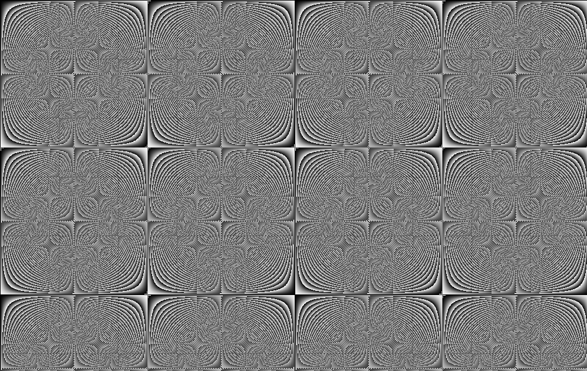

Math Expressions in CImg's Fill Method
Author: Tony Fu
Date: August 19, 2023
Device: MacBook Pro 16-inch, Late 2021 (M1 Pro)
Code: GitHub
This page provides a guide to using mathematical expressions within the CImg<unsigned char>::fill() method of the CImg library.
Syntax and Operators
Mathematical expressions can include the following:
- Basic arithmetic:
+,-,*,/,% - Trigonometric functions:
sin,cos,tan, etc. - Logarithmic functions:
log,exp, etc.
Variables
I: Represents the current pixel value. For example,I*2would double the intensity of every pixel.J(x, y): Refers to the neighboring pixel values at relative coordinates(x, y)x,y,z,c: Represents the coordinates of the current pixel.
Conditional Expressions
You can use conditional expressions like condition ? value_if_true : value_if_false.
Boolean Logic
Use logical operators like && (AND), || (OR), and ! (NOT) for conditional logic, and comparison operators (==, !=, <, <=, >, >=) are also available.
Examples
0. Original Image

1. Doubling the Intensity of an Image
CImg<unsigned char> img("image.jpg");
img.fill("I*2", true);
2. Inverting an Image
CImg<unsigned char> img("image.jpg");
img.fill("255-I", true);

3. Spiral Effect
CImg<unsigned char> img("image.jpg");
img_spiral.fill("(x*y)%500",true);

4. Conditional Operations
CImg<unsigned char> img("image.jpg");
img.fill("I*(I!=J(1,0) || I!=J(0,1)?0:1)", true);